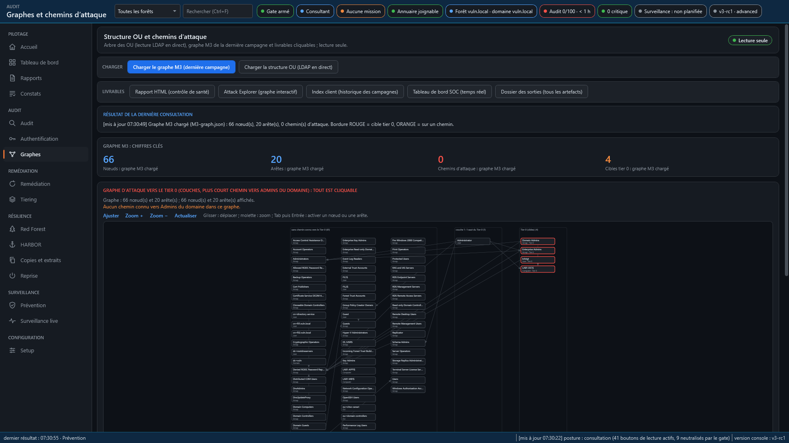

CITSO sustiprina jūsų katalogą nesutrikdydama gamybinės aplinkos, saugo jį nuolat stebimoje citadelėje ir atkuria, jei ataka prasiveržia: atkūrimas į pasirinktą laiko momentą, automatizuotas miško atstatymas. Prancūziškas sprendimų rinkinys, visiškai jūsų patalpose.
Visa CITSO skirta dviem dalykams: kad katalogą būtų sunku užvaldyti ir kad jį būtų galima atkurti nepažeistą, jei kam nors vis dėlto pavyktų.
Pradedame nuo apžiūros, taisome tai, ką patvirtinate, o tada citadelė perima darbą ilgam laikui.
Kampanija skaito katalogą nieko nerašydama: beveik 400 patikrų, miško žemėlapis iki objekto, keliai iki Tier 0.
CITSO analizuoja priklausomybes, pasiūlo taisymų eiliškumą ir taiko juos bangomis jums sutikus, su patikromis prieš ir po.
Citadelė stebi jautrias operacijas, gali jas atšaukti ir moka atkurti arba atstatyti mišką.

Patikros apima sritis, kuriose užpuolikai randa atramos taškų, pagal ANSSI, CIS ir MITRE ATT&CK gaires.
Prieš apsaugant reikia matyti. CITSO audituoja katalogą tik skaitymo režimu pagal ANSSI, CIS ir MITRE ATT&CK gaires, nubraižo kelius iki administravimo paskyrų ir parengia ataskaitas, kuriose kiekvienas verdiktas yra įrodytas. Taip pat prieinama kaip konsultavimo užduotis, nieko neįdiegiant pas jus.
Konsultavimas ar nuolatinis diegimas: peržiūrėti pasiūlymus →

Jei užpuolikas jį užvaldo, jis užvaldo viską. CISO žino, kad jų katalogas pažeidžiamas, tačiau jis retai sutvarkomas. Dėl trijų priežasčių:
| Palyginti su… | CITSO pranašumas |
|---|---|
| Nemokami audito įrankiai | Jie išvardija trūkumus. CITSO nuveda iki taisymo, be rizikos dėl atšaukimo galimybės. |
| Didieji užsienio gamintojai | Viskas lieka pas jus: jokio debesies, jokie duomenys neišeina. Prancūzų gamintojas ir vidutinei įmonei pritaikyta kaina. |
| Visi | „Niekada žalios spalvos be įrodymo“: nepatikrintas punktas lieka „neįvertintas“, užuot pagal numatymą buvęs laikomas atitinkančiu. Klaidinga žalia pavojingesnė už raudoną. |
Orkestratorius, PKI, DC replikos (bent viena kiekvienam valdomam domenui), atsarginės kopijos, teismo ekspertizės analizės ir įspėjimai sutelkti administravimo miške. Jūsų miškai prie jo prijungiami vienpusiu pasitikėjimo ryšiu arba VPN, priklausomai nuo jūsų architektūros.
Įdiegta pas jus, CITSO neleidžia užpuolikui pasiekti galingiausių jūsų paskyrų, o jei jam pavyksta, išsaugo viską, ko reikia atstatymui.
Diegimas, auditas, taisymai, miško prijungimas: viskas atliekama su asistentais. Jie užduoda reikalingus klausimus, parodo, kas pasikeis, ir prieš veikdami paruošia atšaukimą.
Dažniausiai tai smulkmenų grandinė: pamiršta teisė iš naujo nustatyti slaptažodį, per plačiai deleguota tarnybos paskyra, serveryje palikta atvira administratoriaus sesija. Atskirai jos nekelia nerimo. Sudėtos kartu, jos veda prie domeno administratorių.
Patikra, kuri negalėjo perskaityti reikiamų duomenų, nerodoma kaip atitinkanti. Šalia pateiktas pavyzdys paimtas iš mūsų laboratorijos kampanijos, atliktos su įprasta skaitymo paskyra.
Ši paskyra neturėjo prieigos prie grupės strategijų bendrinamo aplanko. Susijusios patikros liko „neįvertintos“, nurodant priežastį.
Būklei įvertinti, o paskui taisyti.
Ilgalaikei apsaugai.
CITSO yra privačios beta versijos etape. Ieškome kelių bandomųjų organizacijų: demonstracija bandomojoje aplinkoje, po to pirmoji tik skaitymo kampanija jūsų kataloge.
Prisijungti prie bandomosios programos